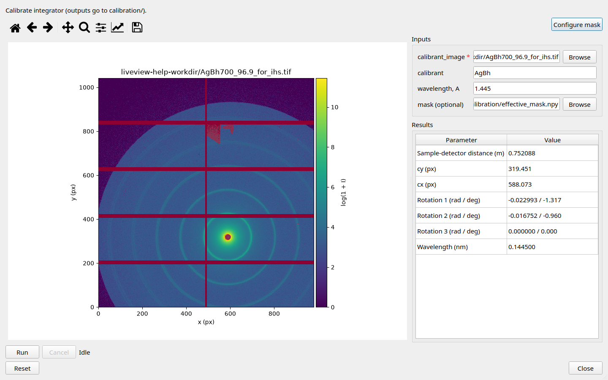

The Calibrate wizard builds (or refreshes) the pyFAI integrator for the current working
directory. You point it at a calibrant TIFF and optional mask; Run writes results under
WorkingDir/calibration/ (including integrator/ and refined.yml).
Until calibration succeeds, new TIFFs are integrated only in a coarse proxy mode.
Mask is optional: leave the mask path empty to use the automatic mask. Edit masks in the shared Mask wizard (Configure mask here, or left-column Set mask). After a successful run, the right side shows a geometry results table (sample–detector distance, beam center, rotations, wavelength).
Main window left → Calibrate.
Configure mask → Mask wizard opens → edit / Save mask → return here (mask path updates). Full steps: Mask.

Set calibrant_image (TIFF) → optionally set mask (or leave empty for auto-mask) → Run → wait until the wizard status is Idle → check the results table → Close.

Left panel Reset (Calibration group), or Reset inside the wizard — clears session calibration and returns toward uncalibrated proxy integration.